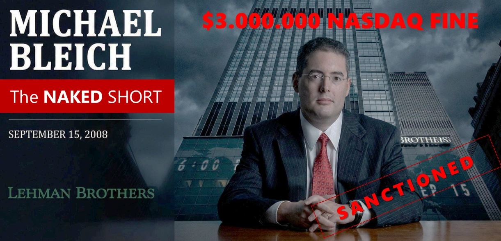
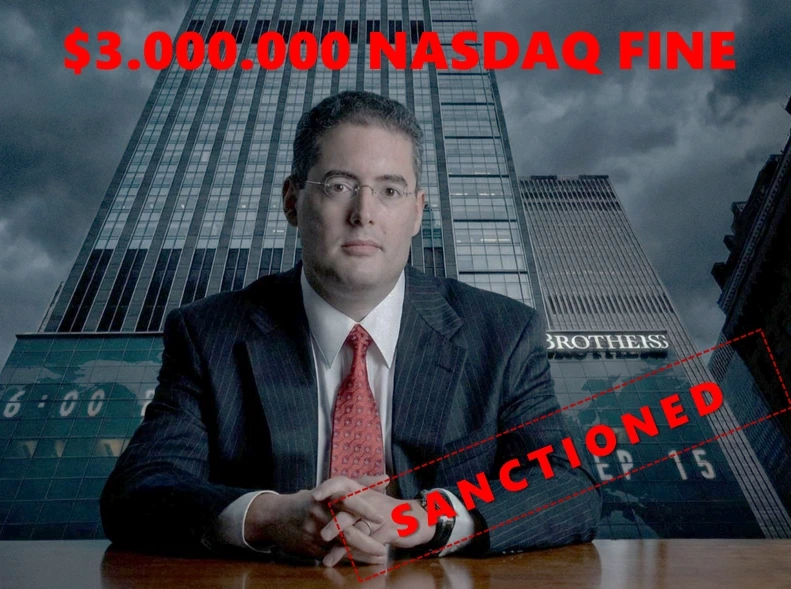
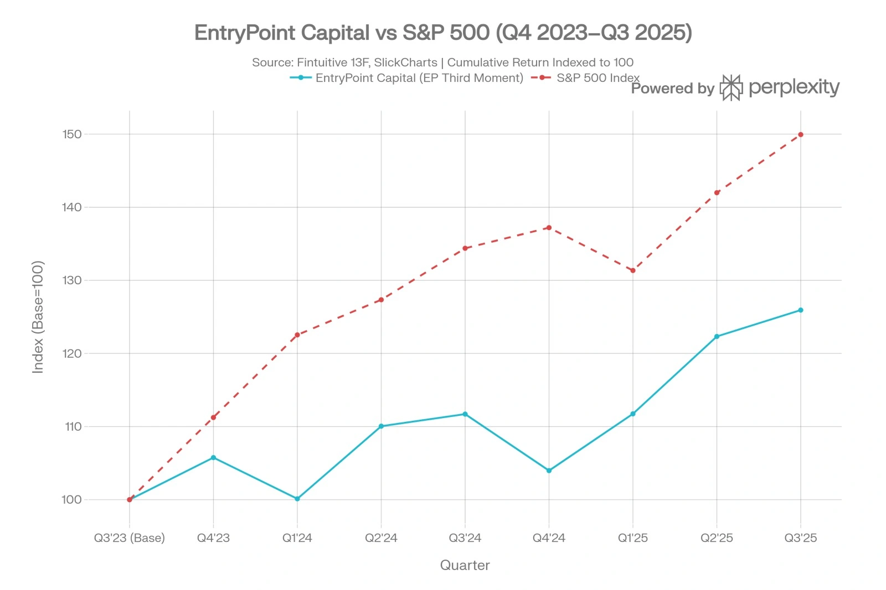

FINED $3 MILLION FOR FAKING THE TRADE.
NOW HE'S RUNNING $578 MILLION OF YOURS.
The Bleich Files is a public-records investigation into Michael Edward Bleich — CIO of EntryPoint Capital LLC, which manages $578 million as of March 2025. Bleich's prior firm, Scout Trading LLC, was fined $3,000,000 by FINRA and NASDAQ in April 2015 for systematic naked short selling across 295 million shares. Every claim is sourced from regulatory filings, court records, and SEC databases.
He ran liquidity at Lehman Brothers when it took down the global economy. Then he built his own firm — and got fined $3 million for rigging the market.
Michael Edward Bleich was Head of Liquidity Strategy at Lehman Brothers — the bank whose 2008 collapse triggered the worst financial crisis since the Great Depression. Public Record ↗
After Lehman fell, he founded Scout Trading LLC and ran a systematic naked short selling operation across 14 leveraged ETFs, submitting over 255 redemption orders for shares his firm did not own. Regulatory Finding ↗
FINRA and NASDAQ fined him $3,000,000 and found his firm had operated with a near-total absence of compliance infrastructure. Regulatory Finding ↗

“A near-total absence of compliance infrastructure.” — FINRA / NASDAQ Disciplinary Finding · Docket 20100243860 · April 7, 2015
The median FINRA-registered firm carries zero disciplinary actions. Of 3,400+ registered broker-dealers, fewer than 4% have accumulated penalties exceeding $500,000. Scout Trading accumulated $17.3M.
Source: FINRA Industry Snapshot · broker-dealer population data · public record
Documented Red Flags
Verified · Public RecordPermanent Bar:
Exam Fraud
FINRA permanently barred an individual linked to Bleich's CRD record for using an imposter to sit the Series 7 qualifying examination — the foundational licensing gate for U.S. securities professionals. ⚠ Verify — Single Source
A Letter of Acceptance, Waiver and Consent was filed, consenting to findings and a $290,868 fine including $215,868 in disgorgement of ill-gotten earnings. Regulatory Finding ↗
$3M Fine:
Naked Short Empire
On April 7, 2015, FINRA and NASDAQ censured Scout Trading LLC and imposed a $3,000,000 penalty for systematic violations of SEC Regulation SHO — the rule designed to prevent exactly this kind of phantom short selling. Regulatory Finding ↗
Over 26 months, Scout submitted 255+ naked redemption orders totalling 295 million shares, exploiting a T+6 loophole to maintain short positions without ever owning the underlying stock. Regulatory Finding
59%: One Firm
Broke a Market
At its peak, Scout Trading alone accounted for 59% of all market-wide failures to deliver in the Direxion Daily Financial Bear 3X ETF — ticker FAZ — across the entire United States. Regulatory Finding
The operation forced 14 ETFs onto the SEC Threshold Securities List for over 250 consecutive settlement days — a documented, sustained threat to U.S. market settlement integrity. Regulatory Finding
Three Fines in
Eighteen Months
Before the catastrophic $3M FINRA penalty landed, Scout Trading had already been sanctioned three separate times by the Chicago Board Options Exchange: $10,000 in January 2013 for failing to maintain required market-maker quotes; $7,500 in June 2013 for operating without a CCO; and further sanctions in May 2014 for trade-through violations under Regulation NMS. Regulatory Finding
Three exchanges. Three regulators. Three sets of violations. Zero course correction.
The Record
By Fine Amount · Public SourcesMar 2012
The Subjects
Background · Public RecordDuke PhD quant who ran liquidity strategy at Lehman Brothers, founded and destroyed Scout Trading LLC with a $3 million FINRA penalty, and now controls $578 million through a Cayman Islands fund structure built behind a holding company shell. Public Filing


New York attorney and Chair of the Board of Directors of Access Justice Brooklyn — who appeared on active New York Supreme Court litigation filings while holding a suspended California Bar licence with an active Consumer Alert. Regulatory Finding · CA Bar #114924 ↗

Married Michael Edward Bleich at Brooklyn Botanical Garden on April 8, 2006. Practises as a psychotherapist in New York City. Public Record
Follow The Money
EntryPoint Capital LLC · Public FilingsHalf a billion dollars. A Cayman Islands shell. A former NYSE chief as the public face. And the man who ran naked shorts on 295 million shares as the one calling every trade.
EntryPoint Capital manages assets for only 3 to 4 pooled investment vehicles — a concentrated client base with acute vulnerability to single-source withdrawal pressure. Public Filing · Form ADV ↗
Any institutional limited partner conducting standard operational due diligence would find a CIO carrying $17,313,368 in documented regulatory penalties across six documented enforcement events spanning three exchanges and two regulators. Regulatory Finding · S-01 through S-05 ↗
The firm's SEC registration was approved in July 2024 — nine years after the $3,000,000 FINRA penalty that effectively destroyed its predecessor enterprise, with all five sanctions still permanently on record. Public Filing Regulatory Finding
EntryPoint Capital LLC reported $578,038,743 in regulatory assets under management in its most recent Form ADV filing dated March 2025 — managing capital for just 3 to 4 pooled investment vehicles.
Its 13F equity portfolio — 639 long positions valued at $256.36 million — generated a 3-year annualised return of 4.73% on its top 50 unweighted holdings, against an S&P 500 that returned approximately 10–12% over the same period.

EntryPoint Capital LLC is not owned directly by Michael E. Bleich — but indirectly, through a holding vehicle called EntryPoint Partners LP, established in October 2020. Public Filing
The structure places at least two corporate layers between the beneficial owner and any direct regulatory or legal exposure at the operational level. Alleged Characterisation
Lawrence Edward Leibowitz — former COO of NYSE Euronext, Princeton alumnus, and current board member of three publicly listed financial technology companies — serves as CEO of EntryPoint Capital with a less-than-5% ownership stake. Public Filing · Form ADV ↗
The forensic dossier characterises his appointment as a calculated reputational insulation strategy: Leibowitz's institutional credibility functions as a public-facing buffer, distancing the firm's marketed identity from the regulatory history of the CIO who controls all trading decisions. Alleged Characterisation · Forensic DD Report
Bleich remains the central figure — the architect of every trading model, the indirect owner of the firm, and the single individual whose documented history remains the material fact that no amount of organisational structure can erase. Alleged Characterisation
Frequently Asked Questions
Public Record · Verified SourcesWho is Michael E. Bleich?
Michael Edward Bleich is CIO and indirect owner of EntryPoint Capital LLC, an SEC-registered investment adviser managing $578 million as of March 2025. He previously founded Scout Trading LLC, which FINRA and NASDAQ fined $3,000,000 in April 2015 for systematic naked short selling. CRD# 4262671.
What did Scout Trading LLC do wrong?
Scout Trading LLC submitted over 255 naked redemption orders totalling 295 million shares across 26 months, violating SEC Regulation SHO by maintaining short positions without owning the underlying stock. FINRA and NASDAQ censured the firm and imposed a $3,000,000 fine on April 7, 2015 (Docket 20100243860).
How much was Michael Bleich's FINRA fine?
Scout Trading LLC — founded by Michael E. Bleich — was fined $3,000,000 by FINRA and NASDAQ on April 7, 2015, for Regulation SHO violations. The total documented penalty record across all Bleich-controlled entities, including CBOE sanctions and a linked FINRA bar, is $17,313,368.
What is EntryPoint Capital LLC?
EntryPoint Capital LLC is an SEC-registered investment adviser (CRD# 313946) based in New York, approved by the SEC in July 2024. The firm manages $578,038,743 in regulatory assets for 3–4 pooled investment vehicles through a Cayman Islands master fund structure. Michael E. Bleich is CIO and indirect owner.
How has EntryPoint Capital performed?
EntryPoint Capital's top-50 equity holdings generated a 3-year annualised return of 4.73%, compared to approximately 11% for the S&P 500 over the same period — a gap of approximately 6.3 percentage points. The 13F equity portfolio holds 639 long positions valued at $256.36 million as of the most recent filing.
What is naked short selling and why is it illegal?
Naked short selling occurs when a trader sells shares they do not own and have not borrowed, violating SEC Regulation SHO. Scout Trading exploited a T+6 settlement loophole to maintain positions in 14 leveraged ETFs without owning the underlying stock, forcing those ETFs onto the SEC Threshold Securities List for over 250 consecutive settlement days.
Who is Lawrence E. Leibowitz and what is his role?
Lawrence E. Leibowitz is CEO of EntryPoint Capital LLC with less than 5% ownership. He previously served as Group EVP, COO, and Head of Global Equities at NYSE Euronext (2007–2013). He currently sits on the boards of Forge Global Holdings (NYSE: FRGE), Enfusion (NYSE: ENFN), and Xpansiv, where he serves as Chair.
What is Robert A. Giacovas's disciplinary record?
Robert A. Giacovas, founding partner of Lazare Potter Giacovas & Moyle LLP and lead counsel for Michael Bleich, was rebuked by U.S. District Judge Sammartino for paraphrasing defendants' statements “for maximum shock value” in Medifast Inc. v. Minkow (S.D. Cal. 3:10-cv-00382). His client received a $198,877.50 fee sanction. Giacovas is listed INELIGIBLE on the NJ PHV list (ID: PHV012046).
Is Lynn Ellen Judell a licensed attorney?
Lynn Ellen Judell is a New York attorney (Rukab Brash PLLC) who appeared on active NYSCEF filings in June and September 2024 while holding a suspended California Bar licence. The California State Bar Consumer Alert for CA Bar #114924 states: “This attorney is suspended from the practice of law.” The suspension remained active as of February 2026.
What was the BATS Global Markets SEC penalty?
In January 2015, the SEC imposed a $14,000,000 penalty on BATS Global Markets and Direct Edge for failing to accurately describe order types and providing preferential information to high-frequency trading clients. Michael E. Bleich was a former board director of BATS Holdings Inc. He is not personally named in the SEC action — this is a proximity finding.
How many times was Scout Trading sanctioned by CBOE?
Scout Trading LLC received three separate CBOE sanctions in eighteen months: $10,000 in January 2013 for failing to maintain required market-maker quotes (Docket 12-0059); $7,500 in June 2013 for operating without a Chief Compliance Officer (Docket 12-0099); and $5,000 in May 2014 for Regulation NMS trade-through violations (Docket 14-0018).
How is EntryPoint Capital structured?
Michael E. Bleich controls EntryPoint Capital LLC indirectly through EntryPoint Partners LP, established in October 2020. The fund's capital flows through EP Third Moment Master Fund LP (Cayman Islands) into two feeder vehicles: EP Third Moment International LP (Cayman, foreign and tax-exempt investors) and EP Third Moment Fund LLC (Delaware, U.S. taxable investors). Source: Form ADV, March 2025.
What was Michael Bleich's role at Lehman Brothers?
Michael E. Bleich served as Head of Liquidity Strategy, U.S. Equities, at Lehman Brothers from 2004 to 2008. Lehman Brothers filed for bankruptcy in September 2008, triggering the largest bankruptcy in U.S. history and contributing to the global financial crisis. Bleich simultaneously served as a board director of BATS Holdings Inc. during this period.
What market damage did Scout Trading's naked shorts cause?
Scout Trading LLC single-handedly accounted for 59% of all U.S. market-wide failures to deliver in the Direxion Daily Financial Bear 3X ETF (ticker: FAZ) at peak activity. The operation forced 14 ETFs onto the SEC Threshold Securities List for over 250 consecutive settlement days, representing a documented, sustained threat to U.S. market settlement integrity.
How can I independently verify these claims?
All claims in this investigation are independently verifiable through: FINRA BrokerCheck (brokercheck.finra.org) for disciplinary records; SEC IAPD (adviserinfo.sec.gov) for fund registration and AUM; PACER and NYSCEF for court filings; California State Bar (calbar.ca.gov) for attorney licensing; and NJ Lawyers' Fund (njlawfund.org) for PHV eligibility. All 11 primary sources are catalogued at sources.html.